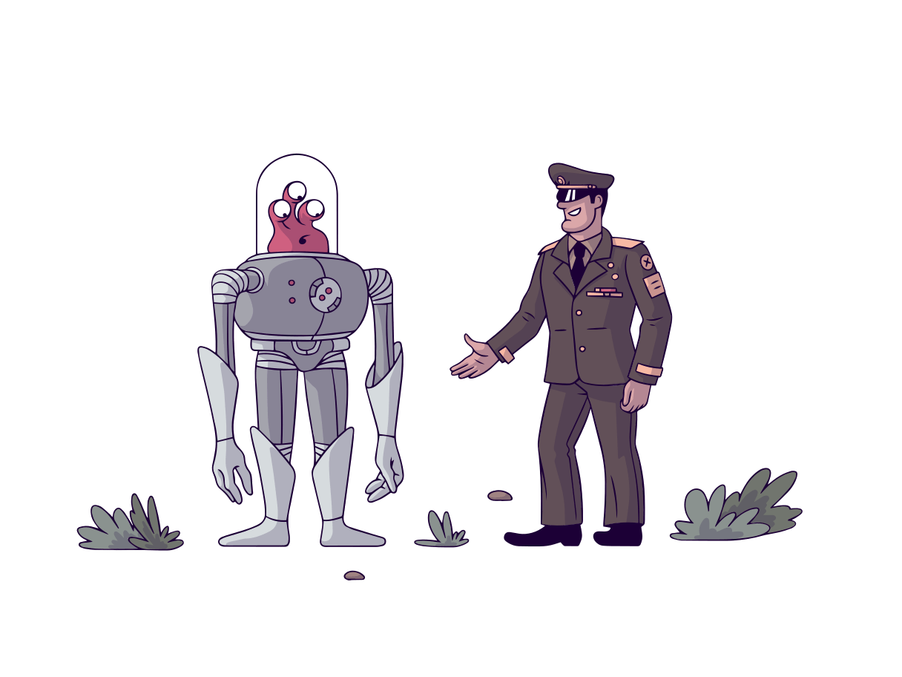

<div class="login-container">
    <div *ngIf="auth.user$ | async; then authenticated else guest">
        <!-- template will replace this div -->
    </div>
        <!-- User NOT logged in -->
        <ng-template #guest>
            <div class="login">
                <div class="login-welcome">
                    <h1 class="text-center text-danger">Quiz Time !</h1>
                    <h2 class="text-center text-white">Howdy, GUEST</h2>
                    <h4 class="text-center text-white">Login to get started...</h4>
                </div>
                

                <button class="btn btn-primary btn-lg login-btn" (click)="auth.googleSignin()">
                    <i class="fa fa-google text-dark"></i> Connect Google
                </button>
            </div>
        </ng-template>

        <!-- User logged in -->
        <!-- <ng-template #authenticated>
            <div *ngIf="auth.user$ | async as user">
                <h3>Howdy, {{ user.displayName }}</h3>
                
                <button (click)="auth.signOut()">Logout</button>
                <pre>{{user | json}}</pre>
            </div>
        </ng-template> -->
    </div>
